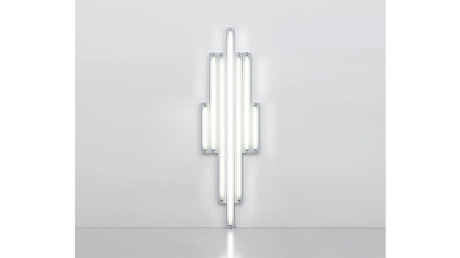

minimal

Dan Flavin
http://www.espacelouisvuittontokyo.com/ja/-どんな人
蛍光灯を使用したミニマルアートを多く制作しています。
-解説
壁に蛍光灯を取り付け配置することで制作しています。蛍光灯の長さや本数、並べ方、さらには光の度合いによって洗練された形を表現しています。
-好きなところ
シンプルですが、光の度合いと配置の仕方が神々しい作品だと思いました。蛍光灯の光の強さも微妙に調節していて、見ていて気持ちいい光の度合いでした。